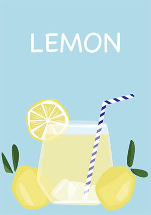
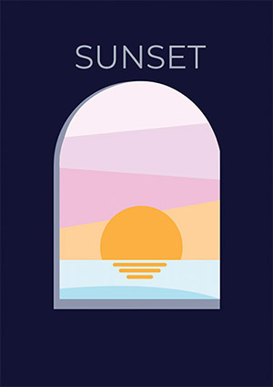
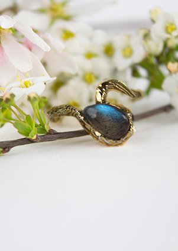
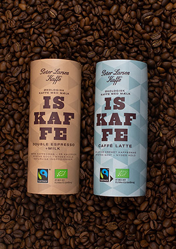

ILLUSTRATIONER
I min fritid holder jeg af at lave små grafiske ilustrationer, som kan blive til plakater. Ilstrationerne er udarbejdet i Adobe Illustrator



FOTO OG PRODUKTBILLEDER
På studiet har jeg deltaget i en workshop, hvor jeg har taget nogen produktbilleder, og efter bearbejdet dem i Adobe lightroom classic og Adobe Photoshop.


ANIMATIONER
På studiet har jeg deltaget i en animation workshop, hvor jeg jeg føste har lavet en illustration i Adobe illustrator, og efter kodet html og css.
PORTRÆT I ADOBE ILUSTRATOR
I Adobe illustrator har jeg udarbejdet et selvprotræt, i forbindelse med undervisning af programmet